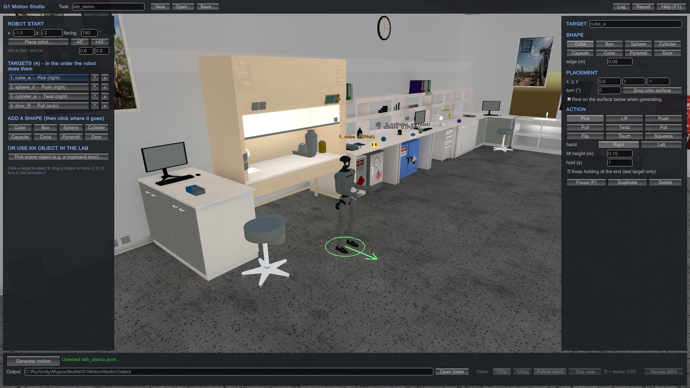
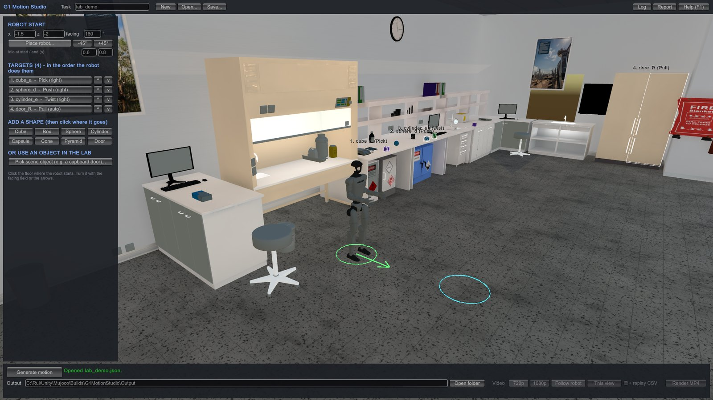
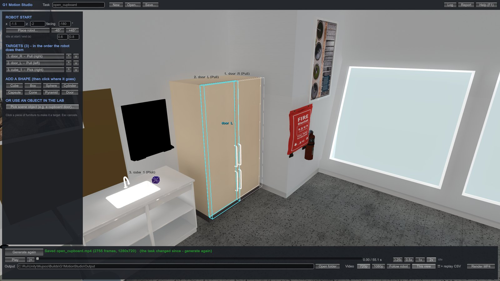
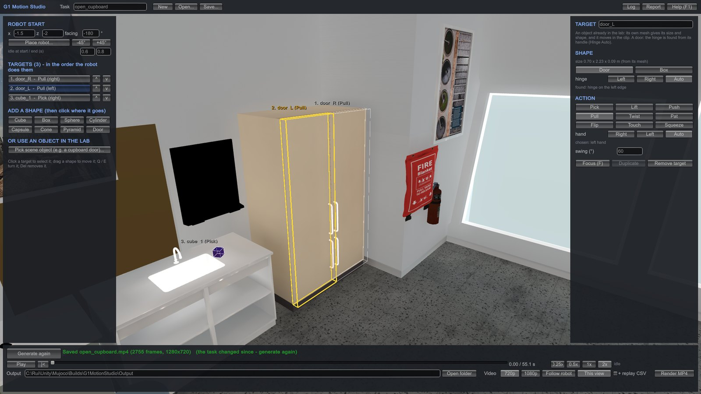
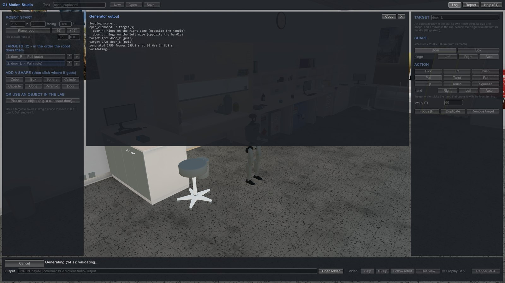
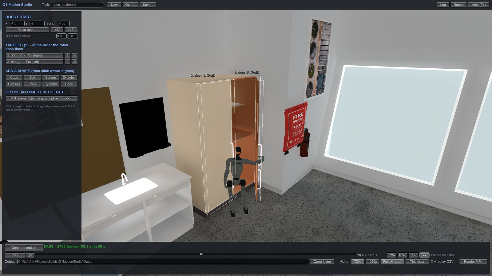
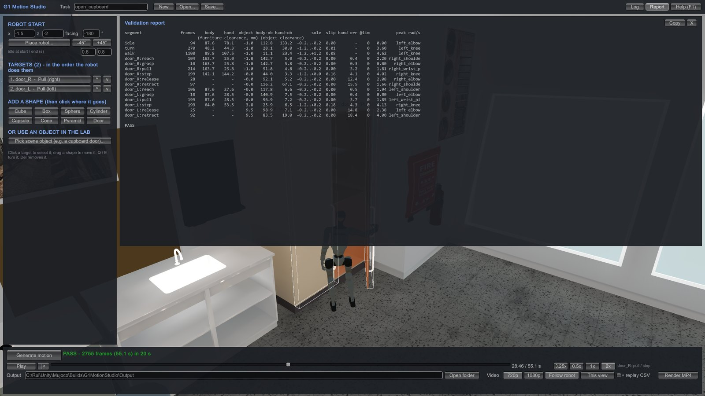
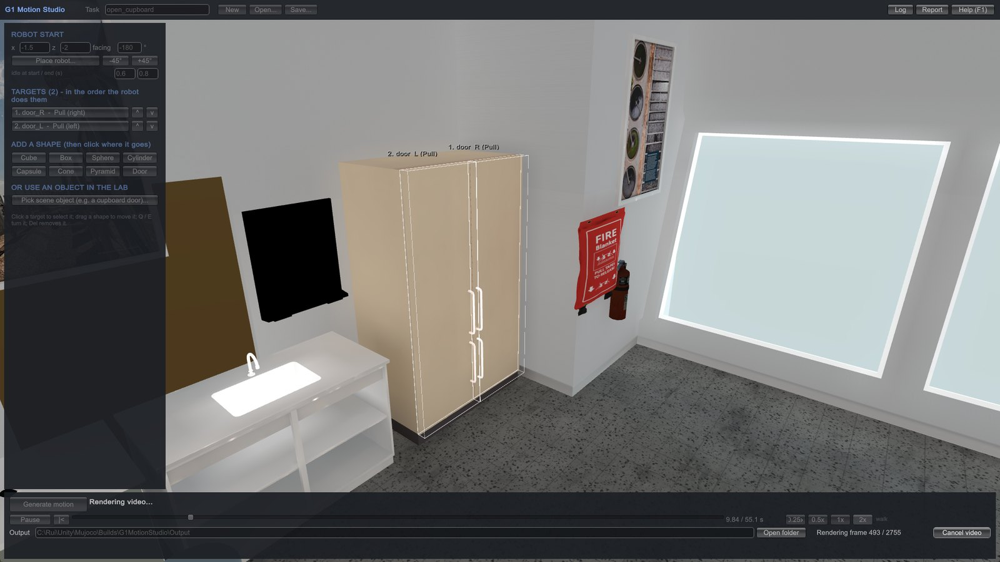
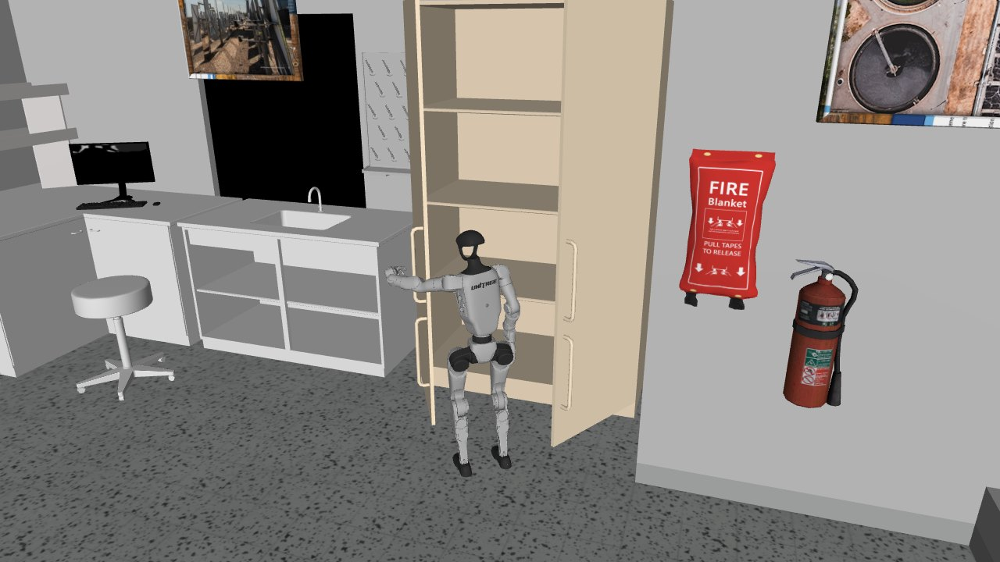

01Getting started
- Unzip
G1MotionStudio.zipinto a folder you can write to, such as Documents or your desktop. NotC:\Program Files: the app saves its results next to itself. - Run
G1MotionStudio.exe. Windows may say it protected your PC, because the app isn't code-signed. Choose More info › Run anyway. - The lab loads in 10–20 seconds, with the message G1 Motion Studio – starting… while it does.
- To see a finished task first, click Open… and choose
Examples\lab_demo.json. Then click Generate motion.
The package folder contains:
| Item | What it is |
|---|---|
G1MotionStudio.exe | The studio. |
MotionGen\ | The motion generator and the lab model it plans in (model.xml). |
Examples\ | A demo task: pick a cube, push a ball, twist a cylinder, open a cupboard door. |
Output\ | Where results go, one folder per task. |
ffmpeg\ | Video encoder used by Render MP4 (FFmpeg, GPL licence). |
Guide\ | This guide. |
02The screen

1 2 3 4 5Examples\lab_demo.json) open, with the cube selected.- 1Top bar. The task name, which is also the name of its output folder. New, Open… and Save… work on task files (
.json). Log shows the generator's output, Report the validation table, and Help (F1) a summary of the controls. - 2Task panel. Where the robot starts, the list of targets in the order the robot visits them, and buttons to add a new shape or pick an object in the lab.
- 3The lab. Targets are drawn with a label (number, name, action). The green ring and arrow mark where the robot starts and which way it faces.
- 4Target panel. Appears when a target is selected: its shape and size, position, action, hand and the action's settings.
- 5Bottom bar. Generate motion and the status line, then playback controls, the output folder and video options once a motion exists.
03Making a motion
Place the robot
Click Place robot… and click the floor where the robot should start. Turn it with −45° / +45°, or type a heading in facing. The x and z fields hold the start position in metres. idle at start / end adds standing time before the first move and after the last.

Add targets
There are two kinds of target.
- A shape. Click Cube, Box, Sphere, Cylinder, Capsule, Cone, Pyramid or Door under Add a shape. The shape follows the mouse; click a bench to drop it there. Each shape starts with a suitable action, for example Pick for a cube and Push for a sphere.
- An object in the lab. Click Pick scene object…, move over the furniture (the part under the mouse is highlighted) and click. A part named as a door, such as the cupboard doors, becomes a door that the robot pulls open; it finds the handle and hinge itself. Anything else is handled as a box. The floor, walls and ceiling can't be picked.

Click a target in the lab or in the list to select it. In the lab, drag a shape to move it, and turn it with Q / E. Ctrl+D duplicates it and Del removes it. Objects from the lab stay where they are; removing one only stops it being a target.
Set what the robot does
The target panel on the right holds the target's settings.
- Shape and size in metres; for an object from the lab, its size comes from its mesh.
- Placement: position, turn, and Rest on the surface below when generating. When this is ticked, a shape only needs to be roughly on a bench and the generator sets it down on the surface.
- Action and hand, then the settings that action uses: lift height, hold time, distance, angle, number of pats, touch point or squeeze depth. See Actions and limits.
- For doors: hinge (Auto finds it opposite the handle) and the swing angle. Leave hand on Auto: the generator then uses the hand on the hinge side, which keeps hold of the handle through the whole swing.

The list order is the order the robot works through the targets. Use ^ and v to change it. A target shown in orange has a setting that can't work, such as a box too big to pick up with one hand. Select it: the reason is shown at the bottom of the target panel.
Generate
Click Generate motion. The robot walks to each target, does its action and moves on. The status line shows progress, and Log shows the generator working target by target. A task with a few targets takes under a minute, validation included. Cancel stops it.

When it finishes, the motion plays back in the lab and the result is written to the output folder. If you change the task afterwards, the button becomes Generate again.
Save and reuse tasks
Save… stores the task (robot start, targets, settings) as a .json file, and Open… loads one. Task files are small and can be shared. A copy of each generated task is also saved in its output folder as <task>_studio.json.
04Actions and limits
Every action is a complete episode: walk to a working position, reach, act, let go, and bring the arms back. The G1's hands have no finger joints, so a grasp holds an object between the palm and the curled fingers.
| Action | Hands | What the robot does | Settings |
|---|---|---|---|
| Pick | one | Grasps it from above, lifts, holds, puts it back. | lift height, hold time, keep holding at the end (last target only) |
| Lift | two | Palms on its left and right sides, lifts, holds, puts it back. | lift height, hold time |
| Push | one | Palm on the near side, slides it away (a sphere rolls). A door swings away. | distance; door: angle |
| Pull | one | Grasps it, or puts a palm on top of a larger object, and slides it closer. A door: grasps the handle and swings it open, stepping as it goes. | distance; door: angle |
| Twist | one | Grasps it, or puts a palm on top, and turns it about its vertical axis. | angle |
| Pat | one | Pats the top with the palm. | number of pats |
| Flip | one | Pushes its upper near side so it tips over away from the robot. | – |
| Touch | one | Touches a point with a fingertip and holds. | point (front, top, left, right), hold time |
| Squeeze | two | Palms on its left and right sides press in, and hold. | depth, hold time |
Limits. The generator skips a target it can't do and says why, rather than making up a motion.
- One hand holds objects up to 13 cm across. Two-hand actions need objects 10–55 cm across.
- Objects must be on a bench, within about 35 cm of the edge the robot stands at. The robot can't crouch, so objects on the floor can't be handled.
- Doors can be pushed, pulled or touched. A cupboard door opens toward its handle, so use Pull.
- A sphere can't be flipped; push it to roll it.
- The lab is fixed: it is the scene as it was when the package was built. Furniture can't be moved.
05Checking the result
Every motion is checked against the real lab geometry before you see it. The status line shows PASS, or FLAGS when something needs a look, followed by the frame count, the clip length and how long generation took. Skipped targets are counted there too.

Playback. Play/Pause (Space), |< back to the start, drag the timeline to scrub, and step with the arrow keys (Shift for 1 s steps). 0.25x to 2x set the speed. Clicking the task panels returns to editing.
Report. The Report window lists every segment of the motion (walk, turn, then each target's reach, grasp, pull and so on) with measured clearances and errors in millimetres. A flagged segment ends with <-- FLAG. Any warnings are listed under the table.

| Flag | Meaning |
|---|---|
| BODY IN FURNITURE | The body goes more than 3 mm into furniture. |
| HAND IN FURNITURE | A hand goes more than 5 mm into furniture. |
| OBJECT IN FURNITURE | The target object goes into furniture. |
| ARM/BODY IN OBJECT | The arm or body passes through a target object, for example a door it has already opened. |
| HAND IN OBJECT | A hand presses into an object further than the action allows. |
| HAND OFF TARGET | While working on the object, the hand is more than 5 cm from where it should be, so the action isn't really happening. For a door, set hand to Auto. |
| JOINT SPIKE | A joint moves faster than 6 rad/s. |
A flagged motion is still saved, so you can look at it. Usually a small change fixes it: move the target, turn the robot's start, change the hand, or reorder the targets.
06Video
Once a motion exists, the right of the bottom bar has the video options.
- 720p or 1080p: the video size.
- Follow robot keeps the camera behind the robot. This view keeps the camera where you have put it.
- + replay CSV also records the clip as replayed in MuJoCo, with the link poses as simulated.
- Render MP4 plays the clip once and records every frame at 50 fps. Cancel video stops it.

07Output files
Each task gets a folder named after it inside the output folder (by default Output\ next to the app). Open folder opens it.
| File | Contents |
|---|---|
<task>.csv | The motion at 50 Hz in Unity coordinates (y up): the current target, action and phase, root pose, the 29 joint angles (rad) and velocities, both hand positions, which object each hand touches, and each target object's pose. The .json lists the columns. |
<task>.json | Metadata: targets and where they ended up, validation results, warnings. |
report.txt | The validation table. |
<task>_studio.json | The task, for Open…. |
<task>_task.yaml | The task as the generator read it. |
<task>_scene.xml | A MuJoCo model of the lab with the G1 and the task's targets, at the first frame. Textures are in textures\. |
<task>_mujoco.csv | The motion in that model's frame (z up): pelvis and target poses, and joint angles in MuJoCo's order. |
replay_mujoco.py | Plays the two above in MuJoCo's viewer. |
<task>.mp4 | The video, after Render MP4. |
<task>_replay_*.csv | With + replay CSV: the clip as replayed in MuJoCo. |
Generating a task again with the same name replaces its folder's files. Give a task a new name in the top bar to keep both.
08Replaying in MuJoCo
The MuJoCo files run anywhere MuJoCo's Python package is installed, without the studio. Copy the task folder, including textures\, then:
pip install mujoco cd Output\open_door python replay_mujoco.py python replay_mujoco.py --speed 0.5 --loop
The robot's pelvis and the target objects are mocap bodies, driven from the CSV; the joints are set from it each frame. The model also carries a keyframe named start holding the first frame.

09Mouse and keys
| Input | Does |
|---|---|
| Right-drag | Orbit the camera. |
| Right-drag + W A S D Q E | Fly the camera. |
| Middle-drag, or Shift + right-drag | Pan. |
| Wheel | Zoom. |
| F | Frame the selected target. Double-clicking it in the list does the same. |
| Drag a shape | Move it. |
| Q / E | Turn the selected shape (Shift: 5° steps). |
| Ctrl+D | Duplicate the selected target. |
| Del | Remove the selected target. |
| Esc | Cancel placing or picking. |
| Space | Play or pause. |
| ← / → | Step one frame (Shift: 1 s). |
| F1 | Show or hide Help. |
10Troubleshooting
A target was skipped
The status line counts skipped targets, and the Log and Report give the reason, for example "too big for one hand", "out of reach" or "inside the furniture". Change what it says and generate again.
The robot loses a door handle
Set the door's hand to Auto. With the hand on the far side of the hinge, the robot has to turn a long way while holding the door. The generator warns about this in the report.
Render MP4 isn't available
The video options need ffmpeg\ffmpeg.exe in the package. Unzip the whole package again if it's missing.
Results don't appear
Check that the package is in a folder you can write to. The output path is shown at the bottom of the window and can be changed there.
Something else went wrong
The app's log is at %USERPROFILE%\AppData\LocalLow\DefaultCompany\G1 Motion Studio\Player.log. Send it with the task's _studio.json to Rui Wang.